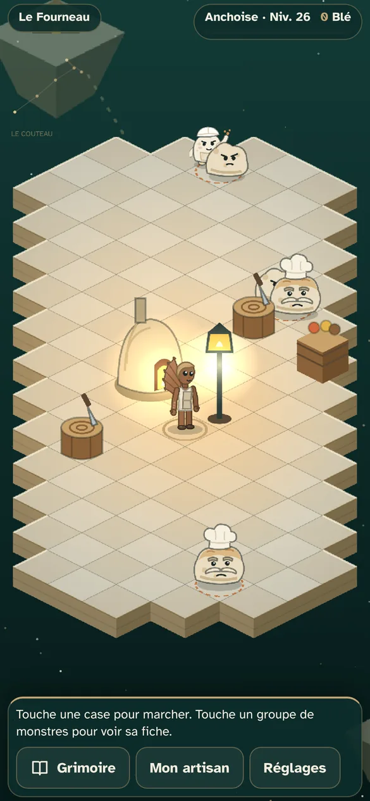
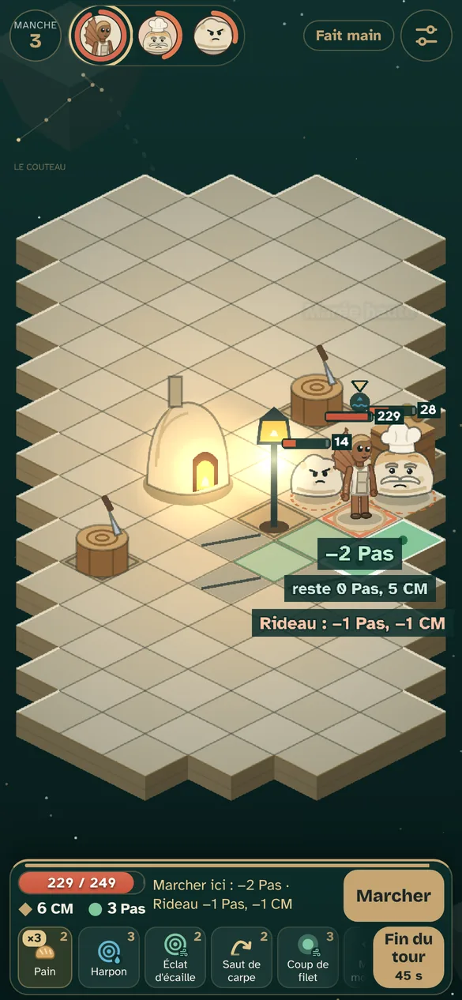
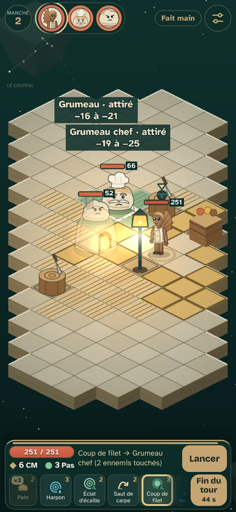

Un RPG tactique au tour par tour pour téléphone, en vue de 3/4. Les huit classes sont les métiers de La Place des Artisans, et tout le jeu parle en jeux de mots : les classes, les éléments, les caractéristiques, les sorts, les monstres et les lieux.
Orvane reste un nom de travail. Les couleurs et la sobriété de l'interface viennent de La Place des Artisans ; tout le reste est original.
La maquette dessinée a laissé place à un vrai prototype, fait avec Phaser, le moteur du futur jeu. On crée son artisan, on se promène au Fourneau de l'Astrelier, on engage un groupe de Grumeaux, on se place, on se bat au tour par tour, puis on lit l'Addition. Toutes les règles viennent du moteur de règles décrit plus bas : le prototype ne fait qu'afficher et animer.
Jouer au prototype Sur téléphone, en portrait. Il marche aussi à la souris sur ordinateur.



Ce qui manque encore : le son, les alliés en ligne, les autres zones. Les personnages sont les dessins de travail de cette page ; ils seront illustrés et animés.
Les règles s'inspirent de la façon dont se joue un tactique au tour par tour à la Dofus : on se place, chacun joue à son tour dans l'ordre de la frise, on dépense ses coups de main et ses Pas, on tient compte des obstacles et du contact. Les mots sont ceux d'Orvane.
| Mot | Ce que c'est | La règle |
|---|---|---|
| Coups de main (CM) | Les actions du tour | 6 au départ, 7 dès le niveau 100. Chaque sort coûte des CM. Ils reviennent à chaque tour. |
| Pas | La marche | 3 au départ. Passer d'une case à sa voisine coûte un Pas ; jamais en diagonale. |
| Victuailles | La vie | À zéro, l'artisan « rend son tablier ». |
| Caractéristiques | Ses points à placer | 5 points par niveau, placés librement : dans les cinq éléments (chaque point ajoute 1 % aux dégâts de ses sorts de cet élément, plus un petit effet secondaire) ou dans les Victuailles. Le conseil, jamais imposé : choisir 1 ou 2 éléments. « Répartir pour moi » le fait pour qui ne veut pas choisir. |
| Ouverture | L'ordre de jeu | Le camp qui a la meilleure Ouverture moyenne commence ; ensuite, les deux camps alternent, chacun dans l'ordre de son Ouverture. C'est la frise du haut. |
| Rayon | La portée | Chaque sort a un Rayon minimum et maximum. Certains Rayons se rallongent, d'autres non. Beaucoup de sorts demandent de voir la case : un décor ou un combattant bloque la vue. |
| Rideau et Faux-fuyant | Le contact | Quitter une case au contact d'un ennemi fait perdre des Pas et des CM, selon le Rideau de l'ennemi et son propre Faux-fuyant. Aucun Pas n'est garanti : on peut rester « pris dans le Rideau ». L'aperçu le montre avant de marcher. |
| Conservation | La résistance | Un pourcentage par élément qui réduit les dégâts reçus, plafonné. |
| Levure | La puissance | Ajoute un pourcentage aux dégâts de ses sorts. |
| Coup de maître | Le coup critique | Une chance par sort de frapper plus fort, avec sa propre fourchette. La toque dorée l'annonce. |
| Entame | L'usure | 12,5 % des dégâts reçus sont retirés du maximum de Victuailles jusqu'à la fin du combat : on ne remonte jamais tout à fait. Certains sorts entament davantage. |
| Écrasement | Les dégâts de poussée | Un combattant poussé contre un obstacle ou un autre combattant prend des dégâts, et celui qu'il heurte aussi. Jamais un allié. |
| Zones | Croix, rond, ligne, cône… | Les dégâts baissent en général en s'éloignant du centre. Une zone de dégâts ne touche jamais un allié ni soi-même. |
| Soins | Réservés | Seuls le Pâtissorcier et le Pâtéladin soignent. Les autres ont le Pain de route du Sac : 2 CM, une fois par tour, trois par combat. |
| Mise en place | Avant le combat | On choisit sa case de départ parmi les cases dorées, et une Commande. |
| Commande | Le défi du combat | Par exemple « Sans contact » ou « Une seule cuisson ». Tenue jusqu'à la victoire, elle donne un bonus de Savoir-faire (XP) ou de Ristourne (butin) ; sur une défaite, elle ne compte pas. |
| Minuteur | Le temps du tour | 45 secondes, sans report. En solo, on peut le couper. En groupe, trois tours passés sans jouer font quitter le service ; en solo, le tour passe et rien de plus. |
| Addition | La fin du combat | XP, Blé et objets. Un artisan bien plus fort que les monstres gagne moins d'XP ; un groupe qui attend sur la carte prend un Arrivage, jusqu'à +100 % d'XP. |
Flambée : les gros coups et les dégâts qui durent (Brûlé, fournées). Eaudace : ralentir (Ramolli, retraits de Pas, Enraciné). Terroir : les coups au sol et les poussées. Soufflé : le placement et les zones larges (attirer, bondir, échanger). Éclair : les rebonds et la vitesse (gain de CM, Ouverture). Chaque point d'affinité a aussi un petit effet : Terroir donne du Rideau, Soufflé du Faux-fuyant, Éclair de l'Ouverture, Flambée du Coup de maître, Eaudace des Victuailles.
Cinquante niveaux après son déblocage, un sort passe au rang 2 (+15 % de dégâts, de soins et de boucliers) ; cent niveaux après, au rang 3 (+30 %, et un tour de moins avant de le relancer).
Une classe par métier de La Place des Artisans, et un jeu de mots par classe. On reconnaît chaque classe à son corps, jamais à ses vêtements : sa hauteur, sa carrure, la forme de sa tête et une signature que nulle autre ne partage. Les huit portent ici exactement la même tenue de départ.
Toutes se jouent en homme ou en femme, avec la peau et les cheveux de son choix : aucune classe n'a de teinte imposée. Passe en vue « Ombres » pour faire le test : même en noir, sans couleur, chaque classe se reconnaît. Lors de nos tests à l'aveugle, classes mélangées, en homme comme en femme, en silhouette comme en jeu, chaque classe a été reconnue à chaque fois. Ces tests ont été faits par des agents automatiques : il faudra les refaire avec de vrais joueurs.
Seize sorts par classe, du niveau 1 au niveau 200, et pour chacun sa déclinaison. L'élément appartient au sort, pas à la classe : chaque classe a des sorts dans les cinq éléments, plus des sorts neutres (soins, boucliers, déplacements, invocations). C'est en choisissant ses sorts et ses déclinaisons qu'on joue Flambée, Terroir ou plusieurs éléments à la fois.
Comme une recette, chaque sort se décline : même ingrédient, autre usage, et souvent un autre élément. Le sort et sa déclinaison prennent la même place dans le grimoire : on équipe l'un ou l'autre, et on change hors combat. Chaque déclinaison se débloque entre son sort et le sort suivant ; dès le niveau 2, les trois sorts de départ se déclinent. Au niveau 200, le chef-d'œuvre de la classe a lui aussi ses deux versions.
| Niv. | Sort | Élément | Coût | Rayon | Effet |
|---|
Cinq éléments, renommés en jeux de mots. Ils appartiennent aux sorts, pas aux classes : chaque classe a des sorts dans les cinq. Chacun se fait son personnage en choisissant ses sorts et leurs déclinaisons, et en plaçant ses points d'affinité dans les éléments qu'il joue.
| Caractéristique | Ce qu'elle fait | Le jeu de mots |
|---|
La monnaie est le Blé, pour le grain comme pour l'argent. La monnaie qu'on achète, si le jeu en a une, serait l'Oseille.
L'astre et l'atelier. Avant d'entrer dans le monde, chaque artisan existe dans son propre atelier céleste : un monde intérieur fait de ses gestes et de ses outils, que les étoiles dessinent en constellations. On y arrive sous la forme d'une Ébauche, une silhouette de pâte d'étoile, et on en sort façonné. Il couvre les niveaux 1 à 12.
Tu n'es qu'une Ébauche. Tu touches la constellation de ton métier, et ton corps prend forme sous tes yeux : la création du personnage se joue dans le monde, pas dans un menu.
Une balance géante. Tu poses tes premiers points de caractéristiques et découvres les cinq éléments.
La zone partagée : les autres débutants, les marchands, le premier tablier, les premières quêtes.
Un pont de lait d'étoiles entre les îles. On apprend à marcher et à éviter les Grumeaux en chemin.
Les premiers combats, contre les Grumeaux et les Mie-trons : coups de main, Pas, Rayon, ligne de vue.
Le premier donjon d'enseigne. La Proxi-Mite, une mite géante aux ailes couvertes d'étiquettes, y ronge les tabliers des artisans : c'est elle qui révèle la menace des Grandes Enseignes.
Le premier donjon. Le Grand Moule veut te couler dans une forme toute faite ; le vaincre, c'est devenir unique.
La sortie. Ton personnage est défourné dans le monde, à Grand-Étal, la ville neutre.
Chaque moyen de voyage vient du décor de l'atelier. Ce qui brille d'or mène à une autre île : un premier toucher montre où, le second part. La carte de l'Astrelier montre les îles, leurs liaisons et les fours allumés ; la quête « Le tour de l'Astrelier » fait essayer chaque moyen.
Incarnam est une terre flottante au-dessus du monde, partagée par tous, avec son village. L'Astrelier en diffère par son principe :
27 zones, une Grande Enseigne par zone. Chaque boss vient d'une enseigne de la grande distribution, transformée en jeu de mots, et sa forme suit le jeu de mots : Cora devient le Rat-Co, un rat. Plus on s'éloigne de Grand-Étal, plus les enseignes grossissent : supérettes, discounters et bazars, spécialistes du frais et du froid, supermarchés, grossistes, hypermarchés, puis les fantômes des enseignes disparues, et un brochet d'or bien vivant sous Grand-Étal.
« D'après… » sert seulement à la conception : le vrai nom n'apparaît jamais dans le jeu. Les noms ont été choisis (voir « Tes réponses ») ; chaque boss garde ses alternatives, dont un repli plus sûr pour les plus risqués.
Les sorts arrivent aux niveaux 1, 1, 1, 10, 26, 41, 57, 73, 88, 104, 120, 135, 151, 167, 182 et 200 ; leurs déclinaisons aux niveaux 3, 5, 7, 18, 34, 49, 65, 81, 96, 112, 128, 143, 159, 175, 190 et 200.
Ils servent dans les donjons de toutes les enseignes, et leurs noms viennent du jargon des magasins.
Ordinaire, Fait maison, Fin, Grand cru, Chef-d'œuvre. Les valeurs de chaque objet sont tirées au hasard dans une fourchette ; on les améliore par l'assaisonnement, avec des épices rares.
La marque protège les noms, le droit d'auteur protège ce qui est dessiné, écrit, composé ou programmé, et le parasitisme sanctionne le fait de copier l'ensemble pour profiter de la notoriété d'un autre jeu. Les règles et les mécaniques ne sont protégées par personne.
Se moquer d'enseignes réelles est plus risqué que de s'inspirer de Dofus. Comme le jeu reprend l'identité de La Place des Artisans, qui vend elle-même aux mêmes clients, un boss qui ridiculise une enseigne peut être vu comme du dénigrement d'un concurrent, et pas seulement comme de la parodie. La parodie protège l'humour ; elle ne protège pas une attaque commerciale.
Je ne suis pas juriste. Avant la sortie, vérifie que le nom est libre sur la base de l'INPI et de l'EUIPO, et demande un avis d'avocat en propriété intellectuelle.
Pas besoin d'Unity. Le jeu s'écrit en technologies web avec Phaser, qui gère très bien la 3/4, puis devient une application Android et iPhone grâce à Capacitor. J'écris le code dans ton dépôt, et tu testes chaque étape sur ton téléphone.
| Besoin | Outil | Rôle | Coût |
|---|---|---|---|
| Moteur du jeu | Phaser et TypeScript | Grille en losanges, tri de profondeur, animations | Gratuit |
| Application | Capacitor | APK Android et app iPhone | Gratuit ; un Mac ou un service en ligne pour l'iPhone |
| Cartes | Tiled | Dessiner les cartes en losanges, case par case | Gratuit |
| Personnages | Spine, ou animation image par image | Animer les corps et les couches d'équipement | Gratuit, ou environ 70 $ pour Spine |
| Serveur de jeu | Node.js et Colyseus | Arbitrer les combats en ligne, empêcher la triche | Quelques dizaines d'euros par mois au début |
| Comptes | Supabase, déjà relié à ton compte | Connexion, personnages, objets, comptoir | Gratuit au départ |
| Mesures en bêta | PostHog, déjà relié à ton compte | Voir où les joueurs bloquent | Gratuit au départ |
Comme la tenue change avec l'équipement, chaque personnage est assemblé en couches : le corps de la classe, avec sa morphologie, puis les sabots, le tablier, la toque et l'outil. Chaque couche est dessinée vue de face et vue de dos, de trois quarts ; le miroir donne les quatre directions. Les animations de base : attendre, marcher, lancer un sort, frapper, encaisser, gagner. Huit classes, deux corps chacune (homme et femme), soit seize corps à animer.
Les 256 sorts de cette page (128 sorts et leurs 128 déclinaisons) sont écrits sous cette forme dans le grimoire, et le moteur de règles les lit tels quels : ajouter ou équilibrer un sort ne touche pas au moteur. Chaque sort est fait de briques (dégâts, poussée, état, pose d'une fournée…), vérifiées par le moteur.
{ "id": "levainqueur.coup-de-petrin", "nom": "Coup de pétrin", "niveau": 1,
"element": "T", "cm": 3, "rayon": { "min": 1, "max": 1 }, "vue": true,
"cible": "ennemi", "parTour": 2, "maitre": 10,
"effets": [ { "type": "degats", "element": "T", "min": 18, "max": 22,
"maitre": [23, 28] } ] }
Le moteur de règles : formules de dégâts, Rideau, zones, états, Commandes, Addition, l'IA des monstres. Près de 300 tests automatiques.
Tu as validé : les dix choix sur les règles.
Le prototype Phaser : les huit classes, le Fourneau, les Grumeaux, les Mie-trons et le Grumeau chef, en solo contre l'ordinateur.
Tu testes : sur ton téléphone, par le lien en haut de la page. Est-ce amusant ?
Barre de sorts, menu masquable, onglets réglables, sauvegarde sur le téléphone.
Tu testes : tout se fait au pouce, d'une main.
Les sept îles, la création du personnage à l'Établi, le donjon du Moule, du niveau 1 à 12.
Tu testes : une application Android installée.
Les 256 sorts, les huit mécaniques, l'équilibrage entre classes.
Tu testes : chaque classe sur un même combat.
La ville neutre, la première région, l'équipement, les panoplies, les métiers.
Tu testes : du niveau 1 au niveau 30.
Comptes, serveur, les autres joueurs en ville, combats en groupe, comptoir. L'étape la plus longue.
Tu testes : un combat à deux avec un ami.
Des testeurs, l'équilibrage, puis les régions suivantes jusqu'au niveau 200, une par mise à jour.
Tu publies : Google Play (25 $ une fois), App Store (99 $ par an).
Pour combler les trous de mémoire : chaque question a ma proposition par défaut, garde-la si elle te va.